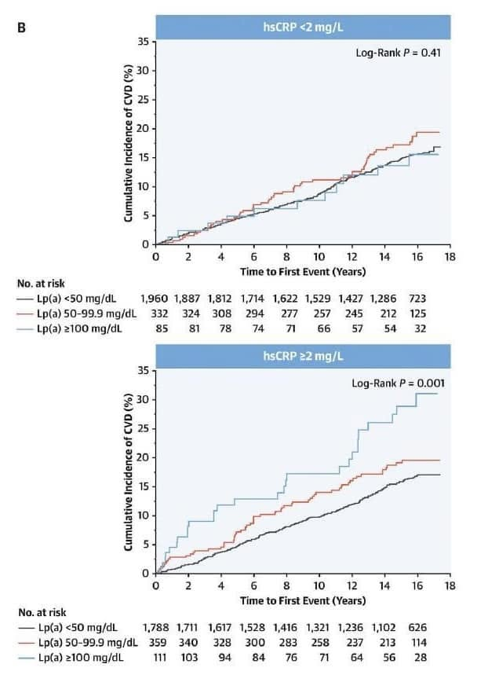

(no text — see the shared post below)
High Lp(a) may only raise risk for CVD when accompanied by high hsCRP.
Patients in the famous MESA study with hsCRP < 2 mg/L saw no increased risk from their high Lp(a) over the study followup period of 13.6 years. Whereas, patients with hsCRP > 2 mg/L saw a major increase in risk from their high Lp(a).
The combination of high Lp(a) and hsCRP > 2 mg/L raised risk much more than just hsCRP > 2 mg/L by itself.
Note that the average age of people in the study was 62yo. Additionally, these people were lower risk individuals being assessed for primary prevention. It’s unclear whether these results apply to younger people, or people at higher risk, or being treated for secondary prevention.
Quoted from the journal paper:
“Lp(a)-associated ASCVD risk is observed only with concomitant elevation of hsCRP. Individuals with concomitant presence of elevated Lp(a) and systemic inflammation have greater ASCVD risk and all-cause mortality, thus may merit closer surveillance and more aggressive ASCVD risk management.”
“The findings are derived from baseline lipids and limited to low-risk persons without CVD with an average age of 62 years who had an annual CVD event rate including strokes of about 1% over nearly 14 years. Since the findings were independent of other known CVD risk factors, when either Lp(a) or hsCRP is elevated, it is reasonable to assess the other, and when both are elevated, consider more aggressive ASCVD management. But much needs to be done prior to incorporating the strategy into guidelines.”
“During a mean follow-up of 13.6 years, 684 CVD events occurred. A significant interaction was observed between Lp(a) and hsCRP (p = 0.04). With hsCRP <2 mg/L, no significant CVD risk was observed at any level of Lp(a) from <50 mg/dl to >100 mg/dl. However, with hsCRP ≥2 mg/L, a significant CVD risk was observed with Lp(a) of 50-99.9 mg/dl (hazard ratio [HR], 1.36; 95% confidence interval [CI], 1.02-1.81) and Lp(a) ≥100 mg/dl (HR, 2.09; 95% CI, 1.40-3.13). Isolated elevations of either Lp(a) or hsCRP were not associated with increased CVD risk. In contrast, the combination of elevated Lp(a) (≥50 mg/dl) and hsCRP ≥2 mg/L) was independently associated with significant CVD risk (HR, 1.62; 95% CI, 1.25-2.10) and all-cause mortality (HR, 1.39; 95% CI, 1.12-1.72).”
acc.orgAmerican College of Cardiology - Security Warningacc.org
#mesaHD #lpaHD #crpHD
